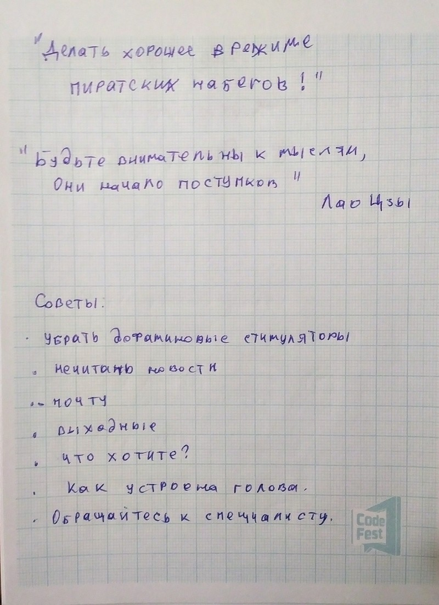

Профессиональное выгорание
(А. Орлов, Стратоплан)
Тесты для тех, кто приходит на курсы:
-
Тест на психотип
-
MMPI тест на профориентацию
-
?
60% находятся в нересурсном состоянии.
Цикл менеджера: "мясорубка" по перерабатыванию входящих запросов в выходной поток ответов, задач и т.д.
(Термин "Профессиональное выгорание" был впервые предложен в 1974 г.)
Стадии профессионального выгорания:
-
Вовлеченность
-
Деперсонализация (отстранение от выполняемой работы, участие "со стороны")
-
Эмоциональные реакции (злость на коллег)
-
Деструктивное поведение / отказ от хобби (алкоголь, наркотики и т.д.)
-
Психосоматика (проблемы со здоровьем)
-
Ощущение бессмысленности жизни
Деньги как компенсация
Проводить время с детьми стало интереснее, чем на работе.
Потому что у детей постоянно какие-то кружки, хобби, какое-то движение.
- Потеря интереса к работе, перенос интереса на другие сферы жизни.
Симптоматика
-
Шопоголизм
-
"Заедание" проблем
-
Алкоголь
-
"Промискуитет"
-
Наркотики
-
Экстремальные виды спорта
-
Игромания
-
Уход в работу
Усталость после отдыха проходит, а астения - нет.
5 гормонов счастья: ...
Дофамин отвечает за удовлетворение от работы.
Когда человек предельно вовлечен в свою работу, то уровень дофамина повышается, а уровень остальных гормонов падает. Но дофаминовые рецепторы имеют свойство притупляться, поэтому спустя какое-то время ситуация становится эквивалентной той, когда уровень всех гормонов низкий.
(Поэтому всегда нужно заниматься чем-то ещё помимо работы).
Ирония в том, что социальные сети, алкоголь, сериалы также являются дофаминовыми стимуляторами.
Поиск нового смысл
-
Sabbatical.
-
Отпуск на год.
Отдыхать - здорово!, но это не помогает ответить на вопрос, как вернуться к работе.
-
Понимание личных целей
-
4 пути поиска себя (Гузенюк)
-
Детские мечты (пилот, капитан, космонавт)
-
История силы. Ситуация в прошлом, в которой ты смог проявить себя, получить эмоциональное вознаграждение. История, которая тебя вдохновляет.
-
Работа с тенью. "Борьба" с темными аспектами себя/окружения.
-
Зов. Поддаться внезапному предложению и начать что-то новое, возможно, в новом месте.
Для себя я понял, что мне интересно "Делать хорошее в режиме пиратских набегов"
Будьте внимательны к мыслям, они - начало поступков.
Лао Цзы
Советы
-
Убрать дофаминовые стимуляторы
-
Не читать новости
-
Не читать почту сразу после прихода на работу
-
Отдыхать в выходные, брать отпуск
-
Ответить на вопрос "Что вы хотите?"
-
Изучать, как устроена собственная голова (у всех она устроена по-разному)
-
Не бояться обращаться к специалисту.
Также:
-
Не теряйте себя!
-
Год отпуска не нужен.
-
Выход есть всегда.
